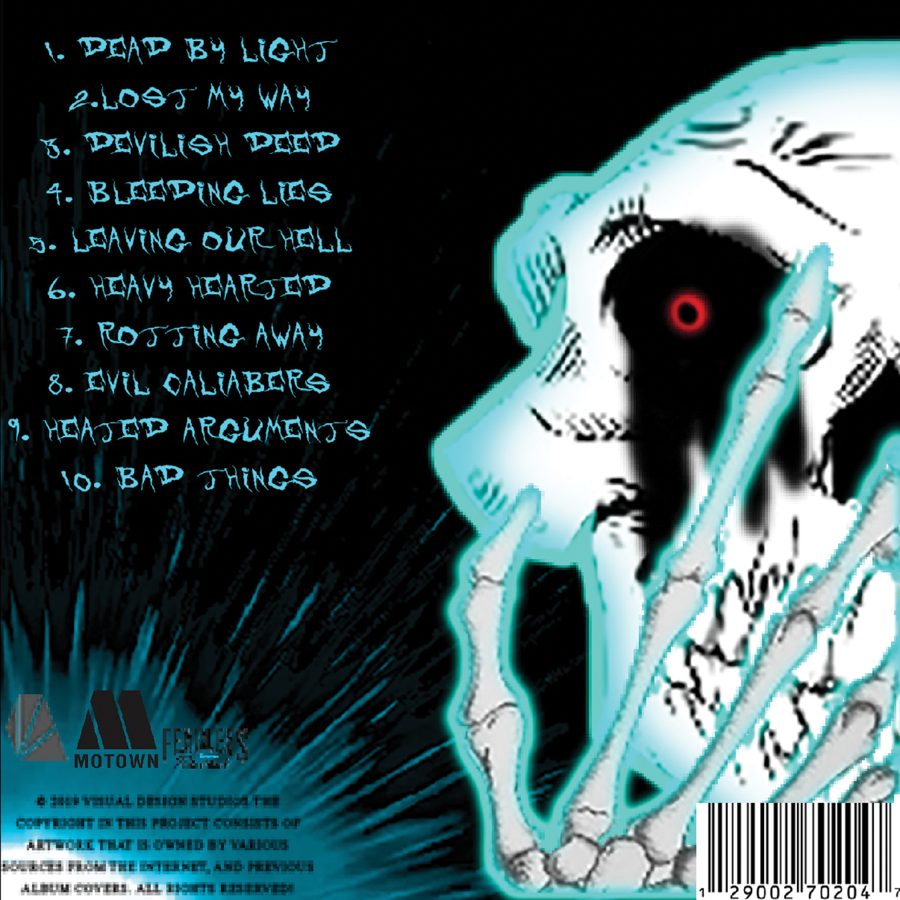
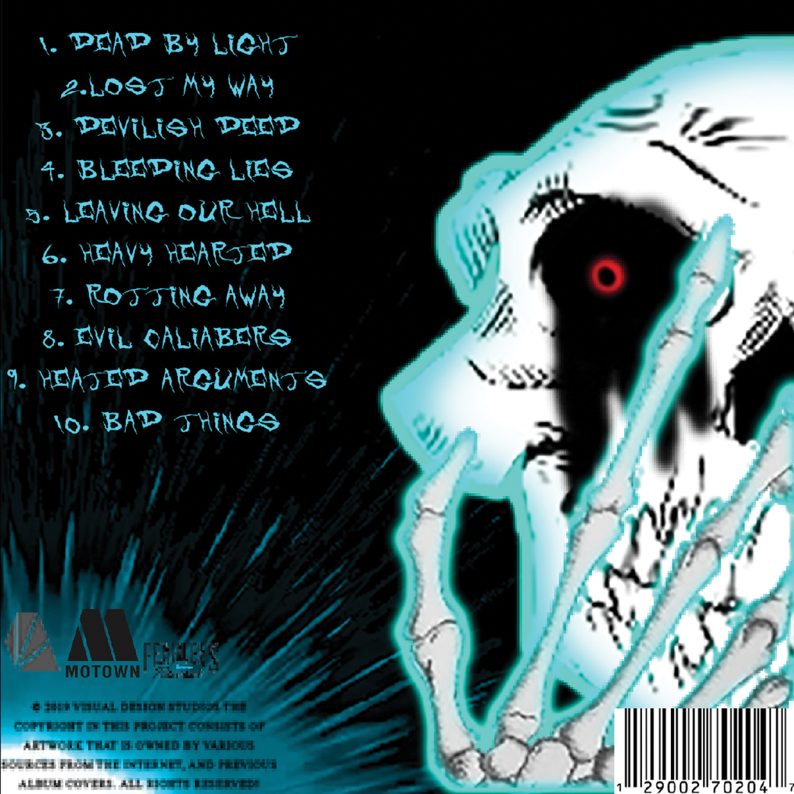

Bendy And The Ink Machine Fan Website
This was a small fan project that I created. It gathers inputs from the user to determine which character you are from the video game “Bendy and the Ink Machine.” It uses If, Else If and Else statements to sort the response. Then it appends an img element and p element to a hidden div class. It also has click functions on the buttons, one to run the statements and the other to reset a quiz counter. The art is not mine, only the code work is mine.
Check it out
Beetle Site
This was my first java script project. The CSS was minimal but the JavaScript code was the main focus. I had listed img elements in an array and set a for each loop to help show the image. Then, I set the button to append an img element depending on the image address you put in the input box.
Check it out
Puerto Rico Recipe Site
This is my Puerto Rican Recipes Website that salvaged from my 2019 project. In this, I photo edited a banner for the webpage. Alongside it comes the navigation bar, which hides and shows certain articles. I had the elements float to make a nice compact page that display different recipes. JavaScript was used to hide and show elements. All of the text used was not written by me. I only completed to design and coding of the website.
Check it out


 
